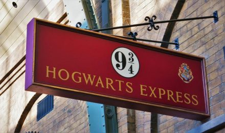
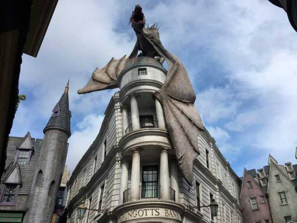
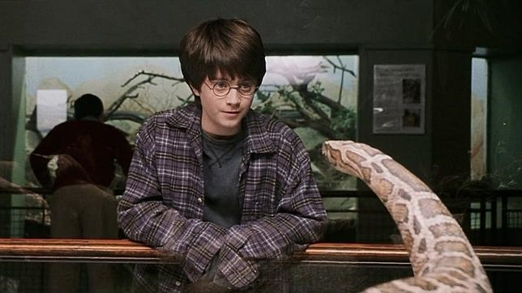
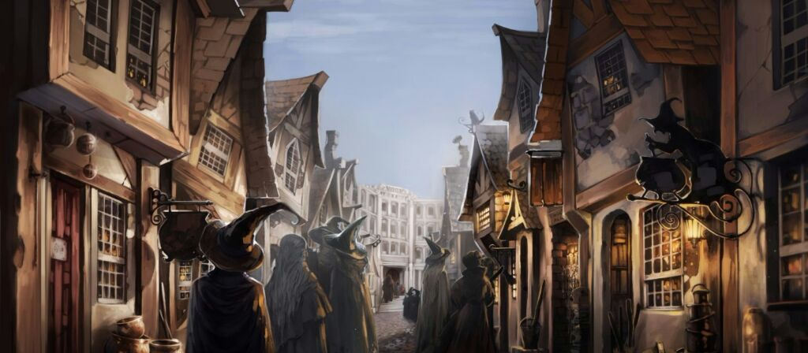
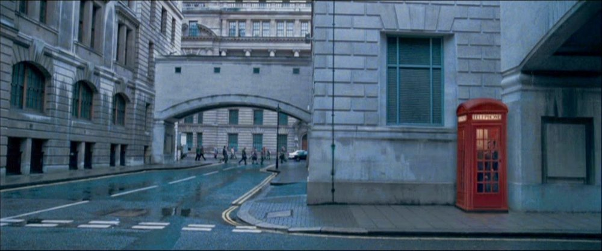

¿En qué consiste la visita?
Todos los fans de la saga de Harry Potter hemos soñado con visitar algunos de nuestros lugares favoritos de la saga. Por eso, hemos organizado una visita guiada por el corazón de Londres que te permitirá sentirte como un auténtico mago.
Presiona ctrl y muévete por el mapa sin miedo para descubrir la posición de los cinco puntos de interés.
¿Qué lugares visitaremos?
Como la visita se realizará a pie hemos seleccionado cinco de los escenarios más caracterísiticos de las películas.
King's Cross Station
No hace falta mencionar que todo curso en Hogwarts comienza en el mágico andén 9 y 3/4. Por eso no podíamos excluirlo. Se visitará el interior de la estación y todos podremos tomarnos una fotografía entrando en el andén con la bufanda de nuestra casa.
Banco de Gringotts
La sucursal bancaria no es otra que la Embajada de Australia, donde se rodaron también algunos interiores. El edificio real no está custodiado por dragones ni administrado por duendes, pero esta parada merece muchísimo la pena.
Zoo de Londres
Todo comenzó en el Reptiliario del Zoo de Londres, donde Harry hizo desaparecer el cristal que le separaba de una serpiente y habló con ella en el idioma de la serpiente o pársel. Nosotros no cruzaremos el cristal, pero sí tomaremos fotos de la placa que situaron al lado del terrario donde se rodó la película.
El Caldero Chorreante
Leadenhall Market, el mercado techado del centro de Londres y uno de los más antiguos de la ciudad (s. XIV), sirve como puerta de entrada al atestado Caldero Chorreante, que a su vez conduce al Callejón Diagon, un recinto masificado especializado en magia y brujería, pócimas, atuendos y animales místicos, donde podremos adquirir nuestra varita mágica o una lechuza, entre otros utensilios.
El Ministerio de Magia
Todos tenemos grabada a fuego en nuestra mente la escena en la que un mago utiliza la Estación de Westminster, junto al Big Ben y el Parlamento, para desplazarse al Ministerio de la Magia. Por eso, aunque no podamos acceder al ministerio, hemos decidido que una para imprescindible es sacarnos fotos en la cabina telefónica.
